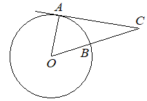

Впишите правильный ответ.
Найдите величину угла ACO, если его сторона CA касается окружности с центром O, отрезок CO пересекает окружность в точке B (см. рисунок), а дуга AB окружности, заключённая внутри этого угла, равна 66°. Ответ дайте в градусах.

КЭС: 7.1 Фигуры на плоскости
Тип ответа: Краткий ответ
Источник ФИПИ